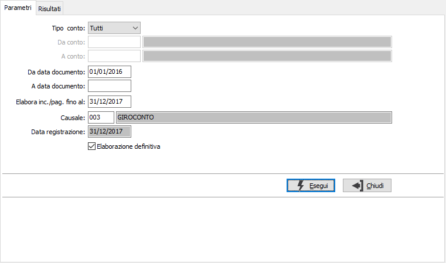
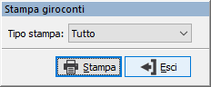
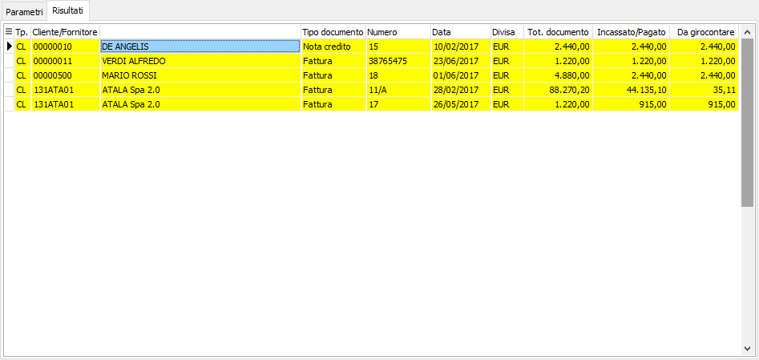

Generazione giroconti incassi/pagamenti
La procedura può essere utilizzata quando in configurazione contabilità speciali l'opzione "Gestione semplificata per cassa" è impostata sia Sintetica che Analitica con funzionalità differenti.
Sintetica
Consente di effettuare la generazione dei movimenti contabili di giroconto dei documenti degli anni precedenti per cui è stato generato il movimento di storno incassi/pagamenti a fine anno (generato tramite la procedura Generazione storno mancati incassi/pagamenti) incassati/pagati nel periodo elaborato.
Analitica
Consente di effettuare la generazione del giroconto contabile di storno del conto di ricavo o costo sospeso a conto di ricavo o costo effettivo. Se le registrazioni di incasso/pagamento vengono effettuate da prima nota con causale che interessa i movimenti transitori tale operazione non è necessaria, se invece le registrazioni di incasso/pagamento sono generate esternamente (es. incasso con effetti pagamenti tramite il modulo bonifici o causale di incasso che non movimenta i transitori) le registrazioni di giroconto devono essere create attraverso questa procedura.
Il campo "Da data documento” è proposto in automatico in base al campo “Esercizio inizio utilizzo semplificata per cassa” indicato in configurazione ed è utilizzato per selezionare i documenti da trattare per cui effettuare il giroconto; il campo “Elabora inc./pag. fino al” corrisponde alla data fino alla quale considerare gli incassi/ pagamenti, è proposta in automatico la data del fine mese. Il campo “Causale” riporta la causale indicata in configurazione da utilizzare per effettuare il giroconto; la causale è una normale causale di giroconto che non tratta le partite, non tratta i movimenti transitori e il registro incassi pagamenti. Il campo “Data registrazione”, corrisponde alla data in cui verranno generati i movimenti di giroconto, viene proposta in automatico in base alla data indicata nel campo “Elabora inc./pag. fino al”.


L'elaborazione definitiva tutti i documenti risultano automaticamente selezionati, tramite il menù richiamabile tramite il tasto destro del mouse, o tramite gli appositi tasti funzione, è possibile selezionare o deselezionare il singolo rigo o tutte le righe ed esportare i dati in Excel o copiarli negli appunti; è inoltre possibile effettuare la stampa; in quest'ultimo caso se saranno selezionati solo alcuni documenti sarà richiesto per quali di questi si vuole effettuare la stampa tramite la finestra mostrata a lato: tutto, solo i selezionati o solo i non selezionati.

Sintetica
Nei risultati viene riportato l’elenco dei documenti degli anni precedenti i cui costi/ricavi sono stati stornati a fine anno e che sono stati chiusi nel periodo elaborato, tramite movimenti contabili di incasso/pagamento, assegnazioni di note di credito e di anticipi oppure esito di effetti attivi; vengono girocontati tutti i documenti non già girocontati precedentemente.
Analitica
Nei risultati viene riportato l’elenco dei documenti emessi con movimento transitorio per cui è presente un movimento di incasso o pagamento per cui non è stato fatto il giroconto; nel caso di documenti per cui è stato generato effetto questi sono riportati solo con effetto esitato e nel caso di fatture fornitori per cui è stata generata la distinta pagamenti questi sono riportati nel caso di stampa definitiva di questa. Sono selezionati anche i documenti quali note di credito e fatture assegnate di pari importo per cui non è presente alcun movimento contabile di incasso o pagamento. Non sono invece selezionate le fatture solo omaggio imponibile o omaggio imponibile più Iva (in quanto non esiste ricavo da girocontare)
Alla conferma saranno generati i movimenti contabili di giroconto da conto/ricavo sospeso a conti di ricavo o costo effettivi relativi ai documenti selezionati con la causale e la data indicata nei parametri, viene inoltre richiesto se stampare la lista dei movimenti generati. È consigliata l’esecuzione del programma di generazione mensilmente indicando come data elaborazione incassi quella di fine mese.